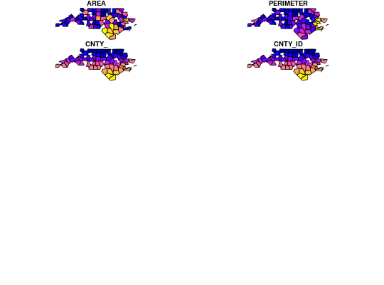
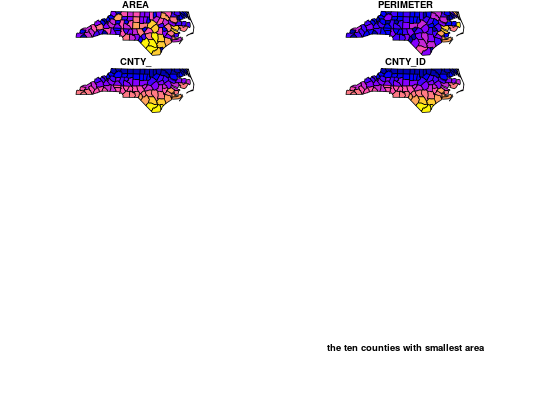

Dplyr verb methods for sf objects
Dplyr verb methods for sf objects
filter_.sf(.data, ..., .dots) arrange_.sf(.data, ..., .dots) distinct_.sf(.data, ..., .dots, .keep_all = FALSE) group_by_.sf(.data, ..., .dots, add = FALSE) mutate_.sf(.data, ..., .dots) transmute_.sf(.data, ..., .dots) select_.sf(.data, ..., .dots = NULL) rename_.sf(.data, ..., .dots) slice_.sf(.data, ..., .dots) summarise_.sf(.data, ..., .dots) gather_.sf(data, key_col, value_col, gather_cols, na.rm = FALSE, convert = FALSE, factor_key = FALSE) spread_.sf(data, key_col, value_col, fill = NA, convert = FALSE, drop = TRUE, sep = NULL)
Arguments
- .data
- data object of class sf
- ...
- other arguments
- .dots
- see corresponding function in package
dplyr - .keep_all
- see corresponding function in dplyr
- add
- see corresponding function in dplyr
- data
- see original function docs
- key_col
- see original function docs
- value_col
- see original function docs
- gather_cols
- see original function docs
- na.rm
- see original function docs
- convert
- see original function docs
- factor_key
- see original function docs
- fill
- see original function docs
- drop
- see original function docs
- sep
- see original function docs
Examples
#> Reading layer `nc' from data source `/home/edzer/git/sfr/inst/shape/nc.shp' using driver `ESRI Shapefile' #> converted into: MULTIPOLYGON #> Simple feature collection with 100 features and 14 fields #> geometry type: MULTIPOLYGON #> dimension: XY #> bbox: xmin: -84.32385 ymin: 33.88199 xmax: -75.45698 ymax: 36.58965 #> epsg (SRID): 4267 #> proj4string: +proj=longlat +datum=NAD27 +no_defs#> Error in cut.default(x, n): 'x' must be numeric#> Error in cut.default(x, n): 'x' must be numerictitle("the ten counties with smallest area")nc[c(1:100,1:10),] %>% distinct() %>% nrow()#> [1] 100nc$area_cl = cut(nc$AREA, c(0, .1, .12, .15, .25)) nc %>% group_by(area_cl) %>% class()#> [1] "sf" "grouped_df" "tbl_df" "tbl" "data.frame"nc2 <- nc %>% mutate(area10 = AREA/10) nc %>% transmute(AREA = AREA/10, geometry = geometry) %>% class()#> [1] "sf" "data.frame"nc %>% transmute(AREA = AREA/10) %>% class()#> [1] "sf" "data.frame"nc %>% select(SID74, SID79) %>% names()#> [1] "SID74" "SID79" "geometry"nc %>% select(SID74, SID79, geometry) %>% names()#> [1] "SID74" "SID79" "geometry"nc %>% select(SID74, SID79) %>% class()#> [1] "sf" "data.frame"nc %>% select(SID74, SID79, geometry) %>% class()#> [1] "sf" "data.frame"nc2 <- nc %>% rename(area = AREA) nc %>% slice(1:2)#> Simple feature collection with 2 features and 15 fields #> geometry type: MULTIPOLYGON #> dimension: XY #> bbox: xmin: -84.32385 ymin: 33.88199 xmax: -75.45698 ymax: 36.58965 #> epsg (SRID): 4267 #> proj4string: +proj=longlat +datum=NAD27 +no_defs #> AREA PERIMETER CNTY_ CNTY_ID NAME FIPS FIPSNO CRESS_ID BIR74 SID74 #> 1 0.114 1.442 1825 1825 Ashe 37009 37009 5 1091 1 #> 2 0.061 1.231 1827 1827 Alleghany 37005 37005 3 487 0 #> NWBIR74 BIR79 SID79 NWBIR79 area_cl geometry #> 1 10 1364 0 19 (0.1,0.12] MULTIPOLYGON(((-81.47275543... #> 2 10 542 3 12 (0,0.1] MULTIPOLYGON(((-81.23989105...nc$area_cl = cut(nc$AREA, c(0, .1, .12, .15, .25)) nc.g <- nc %>% group_by(area_cl) nc.g %>% summarise(mean(AREA))#> Simple feature collection with 4 features and 2 fields #> geometry type: MULTIPOLYGON #> dimension: XY #> bbox: xmin: -84.32385 ymin: 33.88199 xmax: -75.45698 ymax: 36.58965 #> epsg (SRID): 4267 #> proj4string: +proj=longlat +datum=NAD27 +no_defs #> area_cl mean(AREA) geometry #> 1 (0,0.1] 0.07602857 MULTIPOLYGON(((-77.96073150... #> 2 (0.1,0.12] 0.11206667 MULTIPOLYGON(((-84.29103851... #> 3 (0.12,0.15] 0.13422727 MULTIPOLYGON(((-76.54427337... #> 4 (0.15,0.25] 0.19039286 MULTIPOLYGON(((-76.64704895...nc.g %>% summarize(mean(AREA))#> Simple feature collection with 4 features and 2 fields #> geometry type: MULTIPOLYGON #> dimension: XY #> bbox: xmin: -84.32385 ymin: 33.88199 xmax: -75.45698 ymax: 36.58965 #> epsg (SRID): 4267 #> proj4string: +proj=longlat +datum=NAD27 +no_defs #> area_cl mean(AREA) geometry #> 1 (0,0.1] 0.07602857 MULTIPOLYGON(((-77.96073150... #> 2 (0.1,0.12] 0.11206667 MULTIPOLYGON(((-84.29103851... #> 3 (0.12,0.15] 0.13422727 MULTIPOLYGON(((-76.54427337... #> 4 (0.15,0.25] 0.19039286 MULTIPOLYGON(((-76.64704895...library(tidyr) nc %>% select(SID74, SID79, geometry) %>% gather(VAR, SID, -geometry) %>% summary()#> VAR SID geometry #> Length:200 Min. : 0.000 MULTIPOLYGON :200 #> Class :character 1st Qu.: 2.000 epsg:4267 : 0 #> Mode :character Median : 5.000 +proj=long...: 0 #> Mean : 7.515 #> 3rd Qu.: 9.000 #> Max. :57.000library(tidyr) nc$row = 1:100 # needed for spread to work nc %>% select(SID74, SID79, geometry, row) %>% gather(VAR, SID, -geometry, -row) %>% spread(VAR, SID) %>% head()#> row SID74 SID79 #> 1 1 1 0 #> 2 2 0 3 #> 3 3 5 6 #> 4 4 1 2 #> 5 5 9 3 #> 6 6 7 5